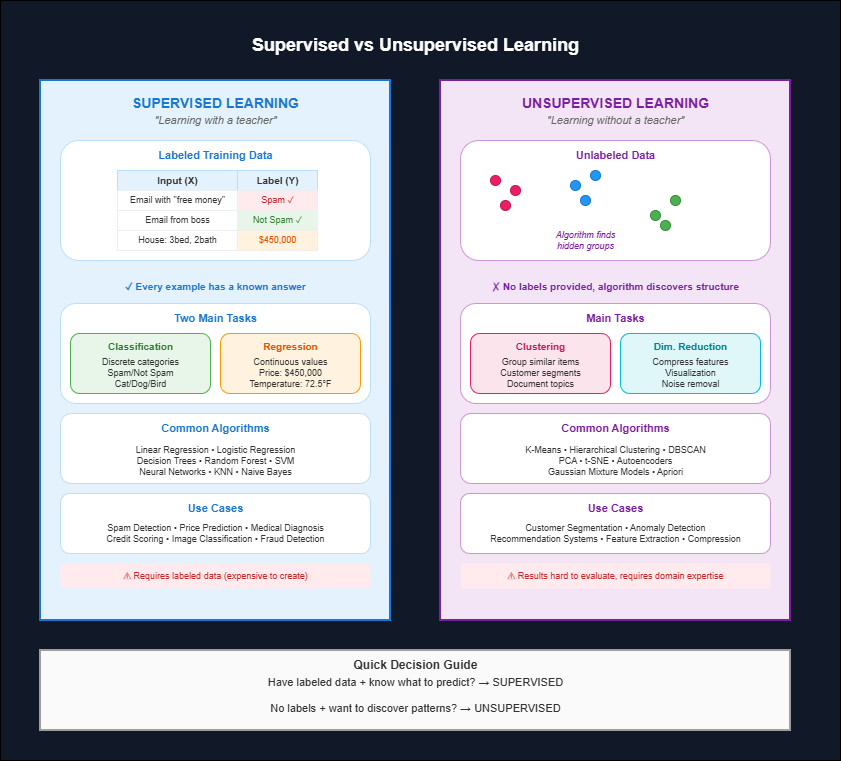

These two paradigms represent the fundamental split in how machine learning algorithms approach problems. The distinction comes down to one thing: does your training data have labels or not? Understanding this difference is essential because it determines which algorithms apply to a given problem and what kind of results to expect.
Supervised Learning
Supervised learning uses labeled data. Each training example has an input paired with a known correct output. The algorithm learns to map inputs to outputs by minimizing prediction errors.
Key Characteristics of Supervised Learning
- Requires labeled training data (expensive and time-consuming to create)
- Clear feedback loop during training (predicted vs actual)
- Well-defined success metrics (accuracy, precision, recall)
- Two main tasks: classification (discrete labels) and regression (continuous values)
Common algorithms include linear regression, logistic regression, decision trees, random forests, support vector machines and neural networks.
Typical use cases are email spam detection, house price prediction, medical diagnosis and credit scoring.
Unsupervised Learning
Unsupervised learning works with unlabeled data. No correct answers exist. The algorithm finds hidden structure, patterns, or groupings on its own.
Key Characteristics of Unsupervised Learning
- No labels needed (cheaper to obtain data)
- No explicit feedback signal
- Harder to evaluate (what defines success?)
- Main tasks: clustering, dimensionality reduction, association
Common algorithms include k-means clustering, hierarchical clustering, DBSCAN, PCA and autoencoders.
Typical use cases are customer segmentation, anomaly detection, feature extraction and recommendation systems.
A Practical Analogy
Think of supervised learning like a student with a textbook and answer key. The student checks each answer against the correct one and adjusts understanding accordingly.
Unsupervised learning is like giving someone a box of mixed objects and asking them to organize it however makes sense. There is no right answer, just patterns to discover.
Practical Example
Consider a practical example: classifying emails as spam or not spam is supervised because you have labeled examples of both. Grouping customers into segments based on purchasing behavior is unsupervised because no predefined categories exist. The algorithm discovers natural groupings.
Limitations
Limitations differ between the two:
Supervised learning needs quality labeled data, which is often scarce and expensive to obtain. Models can also overfit to training labels.
Unsupervised learning results can be hard to interpret and validate without domain expertise. There is no objective measure of whether discovered clusters are meaningful.
Semi-Supervised Learning
A third category worth noting is semi-supervised learning, which uses a small amount of labeled data combined with a large amount of unlabeled data. This approach is practical when labeling is expensive but unlabeled data is abundant.
When to Use Which?
Choose supervised when you know what you want to predict and have labeled examples.
Choose unsupervised when exploring data structure or when labels are unavailable.

The fundamental difference between supervised and unsupervised learning